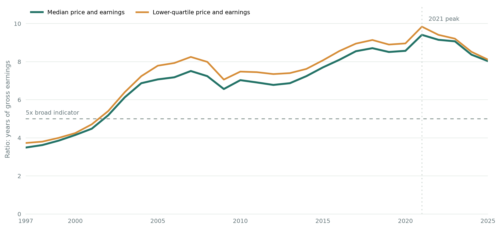
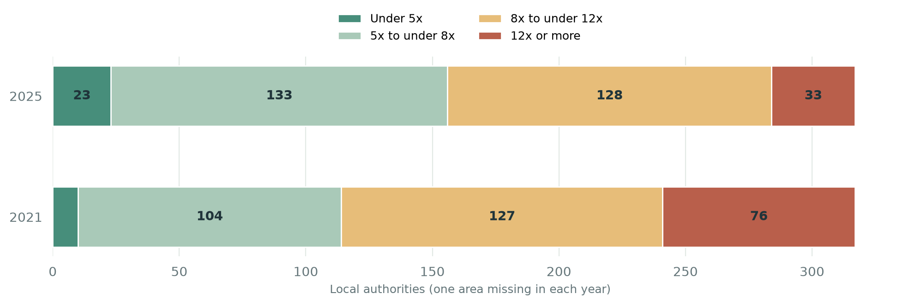
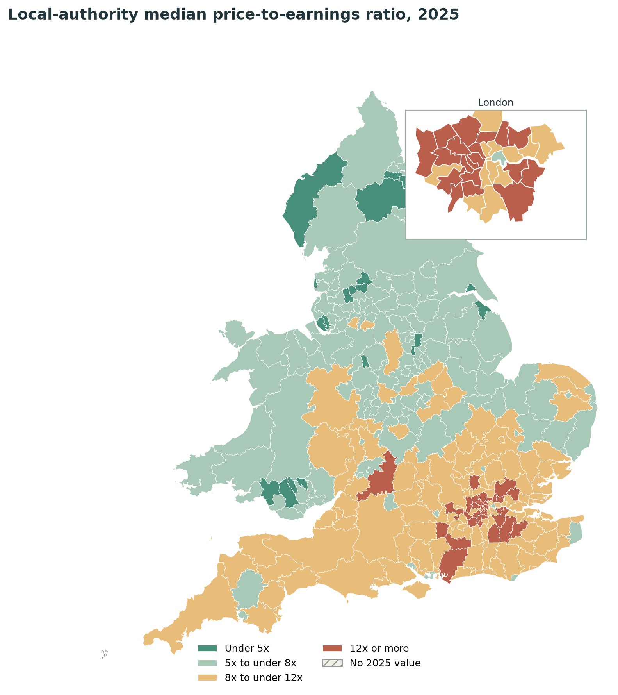
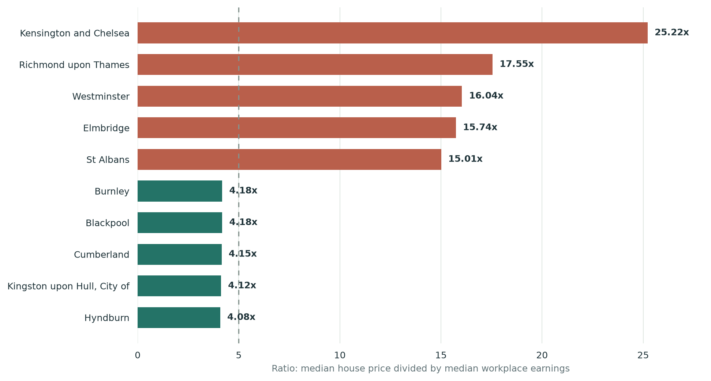

The affordability squeeze
House prices still take years of earnings to reach—even after the post-2021 easing.
The local-authority median house-price-to-workplace-earnings ratio in England and Wales has fallen for four years. Yet the improvement has not erased the gap: in 2025, the median area ratio was 8.03 times earnings, down 15% from its 2021 peak of 9.41x, while 294 of 317 areas with data remained above the Office for National Statistics’ broad five-times-earnings indicator.
This article presents the main findings from my full interactive housing affordability report. It includes a local-authority explorer and the underlying data.
A four-year easing, after a long rise
The median of local-authority ratios peaked in 2021 and then fell through 2025. The trend chart shows both the median-price series and a separate lower-quartile series, which compares lower-quartile prices with lower-quartile earnings.

These are area-level ratios, not a measure of a particular household’s ability to buy. The earnings measure is gross annual workplace-based earnings for full-time employees; it does not account for household income, joint earners, deposits, existing equity, mortgage rates or other buying costs.
Most areas remain above the broad benchmark
The five-times-earnings line is an ONS broad indicator, not a complete affordability test. Even after the recent easing, 294 of the 317 local authorities with a 2025 value remained above it.

The geography of the squeeze
The easing is uneven across England and Wales. The map groups each area by its 2025 median ratio; London is enlarged in an inset to make the borough boundaries easier to distinguish. Isles of Scilly has no 2025 value.

A wide local gap
National averages conceal very different local markets. In 2025, the median-price ratio ranged from 4.08x in Hyndburn to 25.22x in Kensington and Chelsea.

What the comparison can—and cannot—say
The ratio divides house prices by gross annual earnings for full-time employees using workplace-based earnings. It is an individual earnings comparison, not household income. It does not account for two earners, self-employment, deposits, existing equity, mortgage rates or ongoing housing costs. The homes sold are not mix-adjusted, so changes in the types of homes sold can also affect the ratio.
The five-times-earnings threshold is a broad indicator, not a complete test of whether a household can buy. Nor does a lower area ratio mean that every prospective buyer has become better placed: personal circumstances and the cost of borrowing matter.
Sources and further reading
This analysis uses the ONS 2025 House price to workplace-based earnings ratio workbook, tables 5c and 6c, for local authorities in England and Wales from 1997 to 2025. The national England and Wales values in the ONS bulletin are calculated from country-level figures and should not be confused with the median of local-authority ratios shown here.
Explore the full interactive report and download the data · ONS dataset · ONS 2025 bulletin
Contains Office for National Statistics data, reused under the Open Government Licence v3.0. Independent analysis by Kathryn Hopkins.